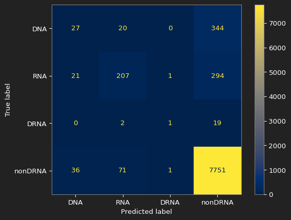

Protein Interaction Prediction
Using an ensemble of models to predict the interactions of proteins with DNA and RNA
Introduction
The word protein comes from the greek word protas meaning “of primary importance”. This reflects the importance of proteins in biology, where proteins are used everywhere in the operation of living organisms. Thousands of new proteins sequences are discovered everyday, each with unique structural properties and interactions with DNA, RNA, and other proteins. As of time of writing, the RefSeq dataset hosted by the NCBI contains around 427 million unique proteins. Manually verifying all of these protein properties would take a long time and be very expensive, however, if we were able to leverage all of the protein properties we already know, we could use them to train machine learning models to recognize these properties on a reasonable scale.
The challenge for this project is to take a dataset of 8,795 proteins with annotations for if they interact with DNA, RNA, both or neither and train a model that can determine which class the protein belongs to. The performance of this model is determined by the average MCC of all 4 classes. This project was a part of my intro to data science class for VCU, so there was a project deadline of around 7 weeks that had to be accounted for.
Data Given
The data was given to us as a .csv file containing raw strings of letters, where each of the letters represented an amino acid and the full string was the protein itself. Each entry was only one protein by itself, and each one came with a class of DNA, RNA, DRNA or nonDRNA (DRNA refers to the protein interacting with both DNA and RNA).
Some examples from the dataset (these are the shortest sequences, the longest sequence had 7,176 amino acids).
| Protein Sequence | Class |
|---|---|
| MNPNCARCGKIVYPTEKVNCLDKFWHKACF | nonDRNA |
| MALTDTQVYVALVIALLPAVLAFRLSTELYK | nonDRNA |
| CSNLSTCVLGKLSQELHKLQTYPRTDVGAGTP | nonDRNA |
| MEEKPKGALAVILVLTLTILVFWLGVYAVFFARG | nonDRNA |
| MSGELLNAALLSFGLIFVGWALGALLLKIQGAEE | nonDRNA |
The dataset was also very unbalanced with most proteins belonging to the nonDRNA class. This class imbalance significantly impacts traditional metrics such as accuracy.
| Class | Count |
|---|---|
| nonDRNA | 7859 |
| RNA | 523 |
| DNA | 391 |
| DRNA | 22 |
The Prediction System
Feature Extraction
All of the machine learning models we planned on using couldn’t take raw text as input. Our first idea was to one-hot encode the protein sequences, but our models also couldn’t handle variable length inputs. Our final solution was to use biopython’s ProteinAnalysis class which could take our raw amino acid sequences and extract potentially useful features from them. There were some amino acids in our dataset that biopython didn’t recognize, so we filtered those out of the sequences. Below is our list of features that we used.
- Amino acid composition (20 features)
- Frequency of each of the 20 standard amino acids (A, C, D, E, F, G, H, I, K, L, M, N, P, Q, R, S, T, V, W, Y)
- Each feature represents the percentage of that amino acid in the protein sequence
- Features sum to 100% for each protein sequence
- Length of protein
- Length of protein sequences
- Molecular weight of the protein
- The molecular weight of the protein
- Gravy
- Describes the hydrophobicity of the protein: positive repels water and negative attracts water
- Helix, Turn & Sheet
- The fraction of amino acids predicted to be in helix, turn, or sheet conformations.
- Positive-Negative ratio
- The positive to negative amino acid ratio in the protein
- Amino acid group counts
- The number of proteins that are non-polar, polar(no charge), polar(positive), polar(negative)
Models
Our strategy for this project was to get as many models as possible, train each of them to either be really good at some metrics or decent with all metrics, then combine all of them into either a voting or stacking ensemble to hopefully get the benefits of each individual model and reduce their weaknesses. Each model that we used was built in a scikit-learn pipeline with its own sampler and preprocessor so that the best ones for each model could be used when all the models are combined into a voter or stacking classifier. All model selection and evaluation was performed using 5-fold stratified cross-validation.
The training process for each model is listed below:
- A baseline model is created with default parameters and no preprocessors or samplers so that all subsequent tests had a baseline to ensure improvement
- Using GridSearchCV, we tested all combinations of preprocessors and samplers on the model with default parameters to find the best combination
- samplers: (none, random over sampler, ADASYN, SMOTE, tomek links, random under sampler)
- preprocessors: (none, standard scaler, min-max scaler, quantile transformer)
- Using the best found combination of samplers and preprocessors, the hyper-parameters for each model were tested with GridSearchCV
The models that were used are listed below along with their respective samplers, preprocessors and hyper-parameters.
Machine Learning Models Used
| Model | Sampler | Preprocessor | Classifier | Hyperparameters |
|---|---|---|---|---|
| MLP | OverSampler | StandardScaler | NeuralNetClassifier | - 40 epochs - Learning rate: 0.001 - ELU activation function - 20 units in the hidden layer |
| KNeighborsClassifier | TomekLinks | StandardScaler | KNeighborsClassifier | - 8 neighbors - Distance weighting: Euclidean |
| Linear SVM | OverSampler | MinMaxScaler | SGDClassifier | - ElasticNet penalty - L1 ratio: 0.15 |
| Logistic Regression | OverSampler | MinMaxScaler | SGDClassifier | - L1 penalty - Alpha: 0.001 - Balanced class weights |
| GB Model 1 | OverSampler | QuantileTransformer | GradientBoostingClassifier | - Learning rate: 0.001 - Max depth: 1 - 25 estimators |
| GB Model 2 | OverSampler | QuantileTransformer | GradientBoostingClassifier | - Learning rate: 0.1 - Max depth: 3 - 40 estimators |
| SVM (RBF) | OverSampler | StandardScaler | SVC | - RBF kernel |
Evaluation
For this project, we used a collection of metrics for each of the 4 classes to get a better idea for how the models were performing. Below is a description of each and how they relate to the problem.
Sensitivity: The measure of how many proteins that are classified into the target class out of the total proteins in the target class.
- \(\small{Sensitivity=}\frac{TP}{TP+FN}\)
Specificity: The measure of how many proteins that were classified as not in the target class were actually not in the target class.
- \(\small{Specificity=}\frac{TN}{TN+FP}\)
Accuracy: The measure of how many proteins were correctly labeled as part of the target class or not. This metric was less useful in the context of this problem due to how unbalanced the dataset was.
- \(\small{Accuracy=}\frac{TP+TN}{TP+TN+FP+FN}\)
MCC (Matthews Correlation Coefficient): The measure of how strongly correlated the predicted labels are with the actual label. This was the most important metric to improve because it is less affected by the imbalance in the dataset.
- \(\small{MCC=}\frac{TP*TN-FP*FN}{\sqrt{(TP+FP)(TP+FN)(TN+FP)(TN+FN)}}\)
The average MCC was used as the final metric to choose the best final model.
Note
Sensitivity, Specificity and Accuracy are all measured in percentage.
The Results
Metrics
For our final models, there were 3 ensemble models created:
Hard Voting: The model predictions are used as votes for a particular class, and the class with the most votes is chosen.
Soft Voting: The model probabilities for each class are used, and the class with the largest sum is the final class. This voting system requires the participating models to have class probabilities, so we had to leave out linear SVM, SVM and logistic regression from this classifier.
Stacker: Takes the output of all the previous models as input to a final model. In our case it was a gradient boosting model with 50 estimators.
Below is the table containing our results and the baseline given by our professor at the start of the project:
| Outcome | Quality Measure | Baseline | Hard Voter | Soft Voter | Stacker | Best Design |
|---|---|---|---|---|---|---|
| DNA | Sensitivity | 6.9 | 51.41 | 26.09 | 9.97 | 26.09 |
| Specificity | 99.3 | 88.91 | 97.48 | 99.49 | 97.48 | |
| Accuracy | 95.2 | 87.24 | 94.30 | 95.51 | 94.30 | |
| MCC | 0.132 | 0.2480 | 0.2618 | 0.2029 | 0.2618 | |
| RNA | Sensitivity | 39.6 | 60.42 | 50.10 | 46.85 | 50.10 |
| Specificity | 98.9 | 94.96 | 98.73 | 98.86 | 98.73 | |
| Accuracy | 95.3 | 92.11 | 99.23 | 99.45 | 99.23 | |
| MCC | 0.501 | 0.4738 | 0.5774 | 0.5615 | 0.5774 | |
| DRNA | Sensitivity | 4.5 | 40.91 | 9.09 | 0.00 | 9.09 |
| Specificity | 100.0 | 92.24 | 99.45 | 99.70 | 99.45 | |
| Accuracy | 99.7 | 92.91 | 95.84 | 95.77 | 95.84 | |
| MCC | 0.122 | 0.0616 | 0.0568 | -0.0027 | 0.0568 | |
| nonDRNA | Sensitivity | 98.6 | 76.89 | 96.14 | 98.47 | 96.14 |
| Specificity | 29.8 | 79.06 | 45.73 | 34.94 | 45.73 | |
| Accuracy | 91.3 | 77.12 | 90.78 | 91.71 | 90.78 | |
| MCC | 0.428 | 0.3800 | 0.4677 | 0.4691 | 0.4677 | |
| average MCC | 0.296 | 0.2909 | 0.3409 | 0.3077 | 0.3409 | |
| Accuracy (4-labels) | 90.8 | 74.69 | 90.07 | 91.22 | 90.07 |
Best Estimator Diagram
Note
Any parameters not shown are set to scikit-learn’s defaults
Confusion Matrices
The confusion matrix for the baseline

The confusion matrix for our best result
Conclusion
When comparing our results to the baseline:
- We significantly improved sensitivity for DNA and RNA, DRNA is around the same and nonDRNA is worse
- Average MCC improved a decent amount, same for DNA, RNA and nonDRNA
- DRNA performance is generally worse
At the end of this project, my team trained our best model on all the data available to us and made predictions on the blind dataset that was sent to our professor for grading. Our model performed well on the blind dataset, getting the 5th highest MCC score out of the class.
| Metric | Cross-Validation (Best Model) | Blind Evaluation | Δ (Blind − CV) |
|---|---|---|---|
| Average MCC | 0.3409 | 0.3600 | +0.0191 |
| Average Accuracy (%) | 90.07 | 89.5 | −0.57 |
Our performance on the blind dataset was consistent with our cross-validation results, however there appears to be a trade-off between increasing MCC (the balanced performance metric) and decreasing accuracy (the unbalanced performance metric).
| Outcome | MCC (Cross-Validation) | MCC (Blind Evaluation) | Δ (Blind − CV) |
|---|---|---|---|
| DNA | 0.2618 | 0.243 | −0.0188 |
| RNA | 0.5774 | 0.570 | −0.0074 |
| DRNA | 0.0568 | 0.173 | +0.1162 |
| nonDRNA | 0.4677 | 0.453 | −0.0147 |
Our performance for each class was mostly consistent with our tests, however the MCC for DRNA showed a significant improvement from the cross validation tests to the blind evaluation. This shows that our model can generalize well on this class. All other classes only had a small decrease in performance.
This experience taught me a lot about the importance of extracting features from data, understanding the limits of what my computer can handle and having a consistent way to pick model parameters. The 2 largest hurdles to overcome in this project were getting useful features from the data and picking the best hyperparameters, samplers and preprocessors for each model. The biggest example of the issue with hyperparameters came from the MLP which was implemented in pytorch and put into skorch for compatibility with scikit-learn. This model was very difficult to narrow down the best parameters for due to the sheer number of parameters possible, so I had to limit the number of hidden layers. The advantage to our approach to this project was the ability to combine the strengths of our models together, however this came at the cost of time that could have been spent finding better features for our models to work with. We believe this was the best approach to take due to our lack of background in biology and limited time to complete this project. While this project was completed as part of a coursework deadline, the modeling and evaluation approach reflects how I would tackle real-world, imbalanced classification problems.